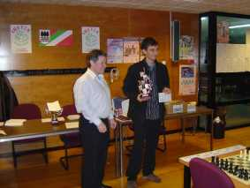
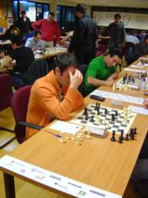
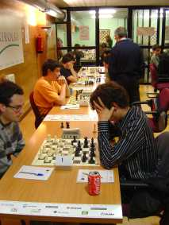

Club de Ajedrez Agustín de Leiza |
| » inicio » socios del club » cto. por equipos » últimos torneos » enlaces |
Campeonato absoluto individualEste sábado 25 de octubre ha comenzado el torneo individual absoluto en Gros, que por última vez se jugará en el polideportivo Manteo ya que para el próximo año se tiene previsto que Gros Xake Taldea tenga su sede en el barrio de Amara. De nuestro club el máximo torneo individual del ajedrez gipuzcoano lo juegan Javier Corral y Alfredo Guerrero, y como casi siempre el máximo favorito es Iñigo Argandoña.Visor de partidas Resumen del torneo (pdf) Séptima ronda 06-12-08Por fin ha acabado el campeonato absoluto y primera de Guipúzcoa que se puede califica de desastroso para nuestros jugadores. Javi ha acabado ganando la última partida ante una joven promesa de 15 años que le ha hecho sudar tinta e incluso temer por una derrota en los apuros de tiempo, aún y todo se ha dejado un saco de puntos Elo en el camino, casi 30. Mal torneo de Javi en conclusión, a pesar del esperanzador comienzo, que se vio truncado por las tablas con Puga y la derrota ante Arana. En descargo de Javi hay que mencionar su delicada situación laboral que le ha tenido entretenido más de la cuenta y le ha restado concentración ante el tablero, de todas formas el juego de Javi en este torneo sí que merece un ERE, sobre todo esos apuros terribles de tiempo. La participación de nuestro otro representante también ha dejado cierto mal sabor de boca, aunque la incomparecencia en la penúltima ronda (intentó adelantar la partida pero no pudo) tenga mucho que ver en esta sensación. Sin embargo no ha jugado como de él se espera con un juego a ratos deslavazado y jugando variantes de apertura en ocasiones muy arriesgadas. En cuanto al torneo se refiere ha visto la victoria de un Iñigo, aunque esta vez no ha sido Argandoña si no Martín, que así ha logrado su primera txapela en un muy apurado final y gracias a su mejor desempate, aunque perdiera su partida con Argandoña.  Sexta ronda 29-11-08Desastrosa ronda para nuestros jugadores que no levantan cabeza. Javi ha perdido contra el jugador de Fomento Mikel Alvarado y Alfredo ha perdido por incoparecencia, no sabemos porqué. A falta de una ronda se confirma la sorpresa del evento Jon Arana que sigue empatado en cabeza después de ganar a Edu Sanz.Quinta ronda 22-11-08Jornada que se puede calificar de mala para nuestros jugadores. Javi consiguió una buena posición en la apertura pero dejó escapar un sacrificio que le hubiese dado un ataque contundente (quizás los resultados de las últimas jornadas hayan hecho mella en su confianza) y después se dejó dar mate sin muchas más historia. Por su parte Alfredo ha hecho tablas con Urretavizcaya, pero no entendemos muy bien el resultado en vista de la partida publicada por la organización, ya que en la posición final tiene ventaja decisiva Alfredo. En fin, quedan dos rondas para la finalización del torneo y esperemos que nuestro jugadores mejoren su rendimiento ya que el 50% que llevan nos parece flojo.Cuarta ronda 15-11-08De nuevo jornada de contrastes para nuestros jugadores, empecemos por la nota agradable del día, y es que Guerrero ha conseguido una nueva victoria con negras muy rápidamente, y es que su rival con blancas le ha jugado la variante Rossolimo a la defensa siciliana planteada por el jugador de Agustín de Leiza y ha conseguido dejarse el alfil de b5 en la jugada 16, con el cosiguiente abandono. La nota mala del día la pone Javi que ha jugado con a priori uno de los favoritos del torneo Luis Olaizola pero que después de una extraña apertura se a quedado inferior y la impresión que da desde fuera es que la partida no tuvo mucha historia y que nuestro compañero no presentó mucha oposición.Tercera ronda 08-11-08Ronda que se puede calificar de aceptable para nuestros jugadores. Por un lado Javi hizo tablas ante un rival a priori inferior, pero que jugó a cambiar todas las piezas, muy sólido, y que no cometió fallos demasiado graves, y la partida no se alejó demasiado del equilibrio en ningún momento. Por su parte Alfredo logró su primera victoria en el torneo, a pesar de reconocer que no jugó muy bien, aprovechó los errores del contrario, primero para ganar una calidad y luego una pieza.
Javi jugando en la tercera ronda.  Vista general de la sala de juego en la tercera ronda. Segunda ronda 01-11-08Nueva ronda de luces y sombras para nuestros jugadores. Javi ha ganado de nuevo mientras que Alfredo a perdido. Javi a ganado su partida con blancas frente a un jugador que nos es desconocido, Javi jugó una apertura sin pretensiones y quedó un poco peor en el medio juego, luego remontó y ganó un peón que le llevó a ganar la partida. Alfredo por otra parte jugó con negras ante la revelación del torneo hasta el momento, Jon Arana. Jugaron una india de rey variante Samisch que Alfredo no manejó bien y pronto quedó en peor posición, entregó una calidad pero no obtuvo suficiente compesación y acabó perdiendo.Primera ronda 25-10-08Suerte dispar en la primera ronda para nuestros jugadores, a Alfredo le tocó un hueso duro de roer, perdió con el fuerte joven jugador de Gros Iñigo Martín. Mientras Javier Corral ganó con negras frente a Jon Kuende en una partida que le resultó más fácil de lo que a priori parecía cuando Jon se dejó encerrar un caballo en a8. Por otra parte, el máximo favorito del torneo produjo la mayor sorpresa, ya que perdió con el fuerte jugador de Eibar Jon Arana.
|